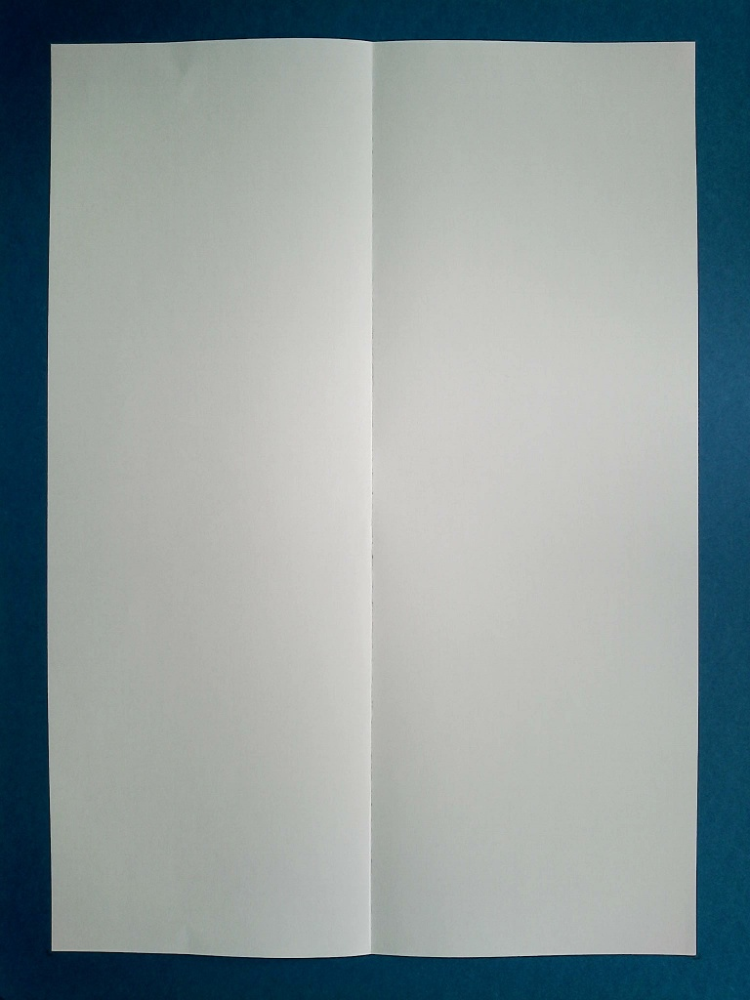
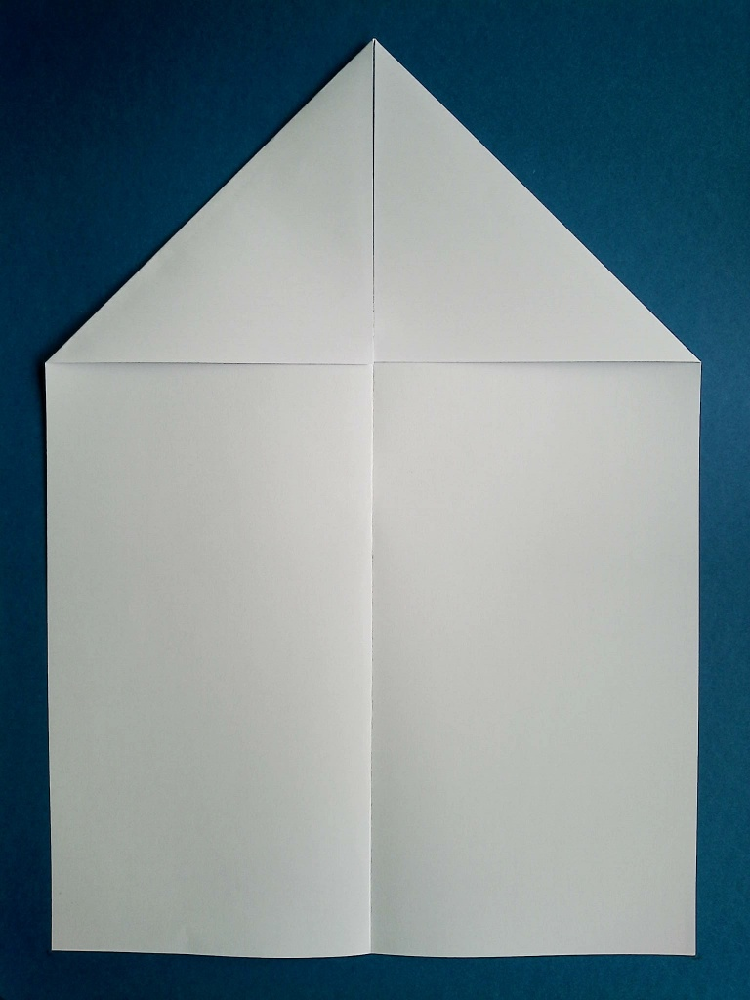
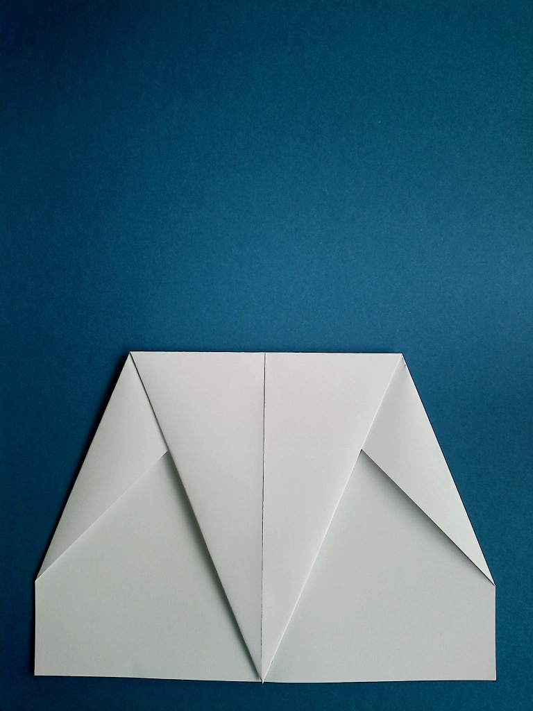
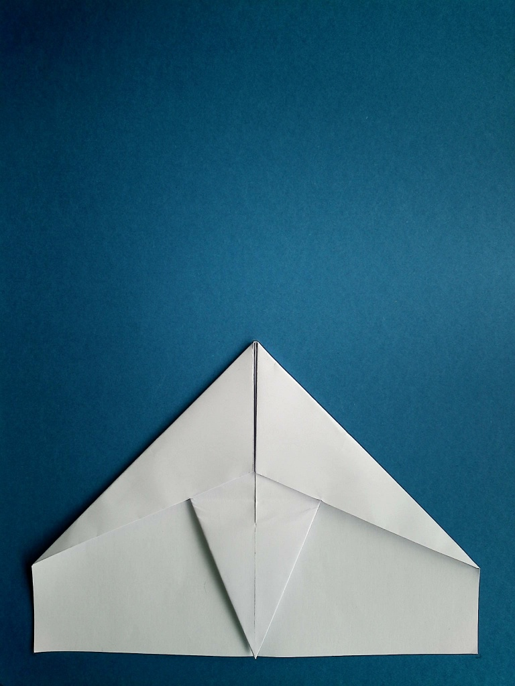

Falke
Der Falke zeichnet sich, wie sein Namensvetter, durch seinen Hakenspitze und seinem langen Schnitt aus.
Er ist relativ klein, und hat nicht die größte Reichweite, ist dafür ein idealer Flieger für Innenräume.
Dieser Flieger ist etwas komplexer zu falten, macht dies aber durch sein elegantes Design wett.
1
Lege das Papier hochkant vor dich hin.
2
Falte das Papier längs in die Hälfte.

3
Falte nun die beiden oberen Ecken zur Mittelfalz.

4
Wiederhole den letzten Schritt.
5
Knicke nun die Spitze zu dir hin bis zum Blattende um.

6
Jetzt faltest du wieder beide oberen Seiten zur Mitte. Die Spitze nimmt langsam Form an.

7
Falte den offenen Teil der Spitze nun wieder zurück, sodass er deckungsgleich mit der anderen Spitze ist.
8
Falte den Flieger in der Mitte zusammen.
9
Nun musst du die Tragflächen abknicken. Achte darauf, dass du ein Griffkante unten am Papierflieger von etwa 1-1,5 Zentimeter stehen lässt.
10
Lege den Flieger auf seine Tragfläche.
11
Falte bei Flügel zu Mitte. Die Falz brauchst du für die Winglets.
12
Daraufhin kannst du die Winglets bis zu der Faltkante aus dem letzten Schritt falten.
13
Abschließend musst du nur noch die Flügel und Winglets ausrichten und der Falke ist fertig, viel Spaß!